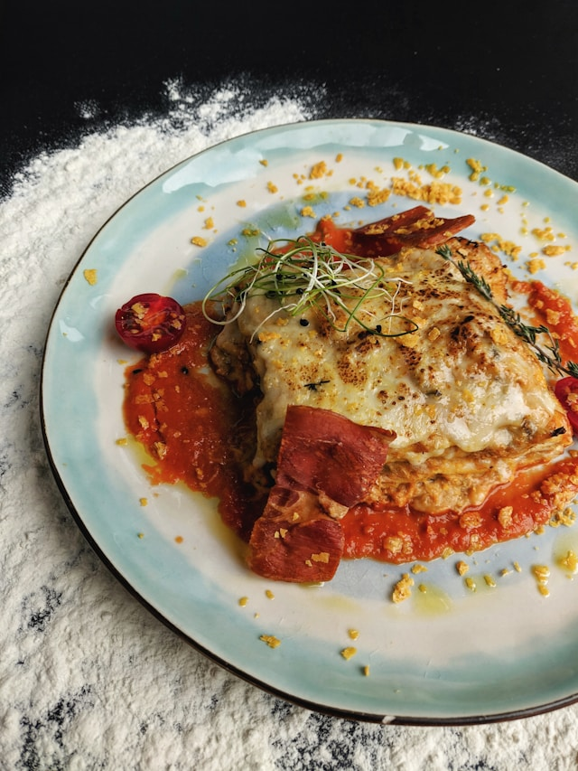

Lasagna

Description
This is a partial recreation of the recipe for John Chandler's "World's Best Lasagna". It has over 20,000 views on Allrecipes and a rating of 4.8 stars. Photo is from Unsplash.
Ingredients
- 1 pound sweet Italian sausage
- ¾ pound lean ground beef
- ½ cup minced onion
- 2 cloves garlic, crushed
- 1 (28 ounce) can crushed tomatoes
- And so on...
Steps
- Gather ingredients
- Cook sausage, beef and vegetables
- Stir in crushed tomatoes
- Bring water to boil and cook pasta
- Combine ricotta with egg and salt
- Preheat oven
- Assemble lasagna
- Cover with foil
- Bake for 25 minutes
- Rest for 15 minutes before serving